Most gardeners pass up the chance to grow their own berry fruits . . . which is a shame, because do-it-yourself strawberries, raspberries, blackberries, and grapes are [1] better tasting, [2] more healthful (no pesticide residues), and [3] more economical than their store-bought counterparts. Not only that, but berry plants are easy to grow, highly ornamental in some cases, and . . . well, we'll let Derek Fell take it from here!
Crisp salad greens, luscious ripe tomatoes, and tender, juice-filled melons are all satisfying in their own way and no garden should be without them. For me, though, the ultimate taste thrill is provided by the berry fruits . . . freshpicked strawberries, raspberries, blackberries, blueberries, and grapes in particular. I value these crops so highly that I make special forays into the back country each summer to go after the wild ones . . . even though I grow large quantities of the same delightful delicacies in my own garden!
Below, I'd like to share with you a few thoughts and suggestions on backyard berry production, in the hope that I can convince you to begin growing strawberries and grapes and bramble fruits yourself.
Strawberries-because they produce a large amount of fruit in a relatively small area-are among the most productive (and most rewarding) of all berry fruits. If you've never grown your own, now's the time to start.
You can plant strawberries in spring, summer, or fall. Fall is probably the best time of all, since plants put in the ground then will develop strong root systems during the cool autumn months and break out into vigorous, bushy growth the following spring. The trouble with spring planting is that you have to disbud the young plants as flowers form and pinch back runners to ensure vigorous growth (and worthwhile yields of fruit) the following season. (This procedure isn't necessary in the case of fall-planted strawberries.)
When choosing strawberry varieties from a catalog or at a garden store, don't be fooled into buying so-called "everbearing" varieties . . . stick with the June-bearing types every time. Breeders have spent a lot of time and effort trying to improve everbearing strawberries, but the sad fact is that there still isn't an everbearer on the market that'll give worthwhile yields. (Standard varieties crop all in one two-or three-week period, but-even so-they out-bear the everbearers easily.)
In order to enjoy a longer cropping season, it's a good idea to plant at least two varieties (one early, one late) of this delicious fruit. Your agricultural extension service (check the county listing in the White Pages) can provide you with a list of recommended varieties for your locality. In my experience-and I've grown and inspected many different crops-the following varieties can nearly always be counted on:
Fairfax -an early ripener-produces extremely soft, dark red berries that-although unsuitable for freezing-are superb when it comes to fresh-off-the-runner eating.
Guardian is a newly developed midseason variety that offers unusually good disease resistance and yields large, tasty, bright red berries.
Premier (early), Midway (mid-season), and Sparkle (late) are other widely available varieties and they produce large crops of delicious berries that are suitable for freezing.
One unusual domesticated variety that closely matches the wild strawberry in appearance and flavor is the alpine strawberry, Baron Solemacher. Baron Solemacher plants cover themselves with beautiful white flowers, and because this variety is so decorative, you'll often find it listed in the flower-not the fruit-section of seed catalogs. And, since it doesn't set runners, this alpine strawberry must be grown from seed that is started indoors ten weeks ahead of outdoor planting time. The seed is tiny (and germination sometimes erratic) but a fine crop of berries-fully twice the size of wild strawberries-can be grown the first year. Just remember that the seed requires light to germinate: Press the tiny grains into the soil's surface and keep the area moist and well lit.
I've seen many ingenious ways to grow strawberries (including the "strawberry barrel" . . see the "May-June Almanac" foldout in MOTHER NO. 45), but the easiest method I know is one in which plants are simply grown all over the top of a low mound of compost-enriched soil in an odd corner of the garden. (Having grown strawberries in regimental straight lines for many years-and having worked hard to keep those lines straight-I was delighted to discover the "mound method", which is so productive and yet so easy on the back!)
Regardless of how you arrange your plants, remember that strawberries love soils that are loaded with organic matter. Well-rotted manure, garden compost, and leaf mold are all highly beneficial to the berries, even if you also feed them with a general-purpose fertilizer.
Remember, too, not to set your plants too deeply (see Fig. 1), and try not to allow weeds to invade your strawberry patch. (It helps to keep the soil around the plants loose and open, and to apply a mulch.) Also, make sure your plants get plenty of sun.
Properly cared for, your strawberry mound (or barrel, as the case may be) should supply you with juicy, tart, vitamin-C-rich fruit for three or four years, or longer.
Raspberries come in several colors-red, black, purple, and yellow-but of the four main types, the red raspberry commands my loyalty for its tangy, fruity flavor and its productiveness. (Note: 1 don't know why, especially since yellow and red raspberries seem compatible, but black and red varieties don't grow well in each other's presence.)
When selecting raspberries from nurseries and catalogs, you'll find some described as "summer-bearing", others listed as "fall-bearing", and still others called "everbearing". The term "everbearing", however, is a little misleading when applied to raspberries, since it's used to describe a plant that crops at two distinct times: once in early summer, and again in the fall. Of the new everbearers, a variety known as Heritage is particularly noteworthy for its ability to produce a moderate crop of large, red berries on old canes in the summer, then a heavier yield on new canes in the fall.
As with all types of "bramble fruit", raspberries are best planted in the fall. When you receive your rootstocks from the nursery (see the sidebar at the end of this article for a list of suppliers), set them in fertile earth that's been enriched with garden compost, leaf mold, or well-rotted manure, and keep the soil thoroughly cultivated for the first few months after the planting.
You'll find that raspberries produce many "suckers" (that is, new canes arising from the base of the parent plant). A certain number of these are necessary for the plant's proper development, but for maximum yields it's advisable-every fall, after the cropping season has ended-to prune all but six or eight canes (per plant) to within an inch of the soil line. (Those canes that you do leave should be trimmed back to 30" in height. See Fig. 2.)
Because wild blackberries are so abundant, many gardeners pass up the opportunity to raise the domesticated kinds . . . which is a pity, since "tamed" blackberry plants offer so many advantages over their wild counterparts. Cultivated varieties not only produce heavier crops of fruit, but bear larger, juicier berries . . . berries that-in my judgment-retain more flavor after freezing than almost any other kind of fruit. With the advent of thornless blackberry plants and dwarf varieties (such as Darrow) that require much less care than full-size varieties, there's no longer any excuse for not raising blackberries in your back yard!
Blackberries will thrive in many types of soil, but do best in moderately light loam to which humus has been added. (A slightly acid soil-about pH 6.0-is desirable.) If the plants are to be trained to a trellis, set them six feet apart . . . otherwise, give them three- to four-foot spacing.
When the canes reach a height of three or four feet, their tops should be clipped to encourage the appearance of "laterals", or side branches. Then-each fall, after harvest-the canes that bore fruit that year should be cut off at ground level and new canes (no more than ten per plant) allowed to develop. When the new canes reach three feet in height, they-in turn-can be clipped to encourage the production of laterals. (And, after these shoots have borne fruit, they should be cut off at ground level, and so on.)
Both of these bramble fruits are blackberry hybrids, which accounts not only for their blackberry-like flavor but for the fact that their cultural requirements are the same as the blackberry's. (As with all cane fruits, it's a good idea to apply plenty of compost to loganberry and boysenberry plantings each year between spring and fall. For maximum productivity, you also may wish to rake a general-purpose commercial fertilizer into the surface of the earth around the canes in early spring. And as always, keep the berry patch's soil weed-free.)
Most berries do better when they're "companion planted" with others of their own kind. This is especially true-however-of blueberries, which are largely self-sterile. In other words, to ensure high productivity it's essential that you plant more than one variety of blueberry. (Currently, the three most popular varieties are Earliblue, Bluecrop , and Coville , which are-respectively-early-, mid-season-, and late-cropping.)
It's also important to bear in mind that blueberries require a highly acid soil (pH 4 to 5). If the dirt in your garden is neutral or alkaline, plan on working a good quantity of pine needles, acid peat, wood chips, and/or other acidic materials into the ground six months to a year before you set out your blueberries.
At the time of planting (which is to say late fall in California, late winter in warm southern areas, and early spring elsewhere), the uppermost "twiggy" branches of each blueberry bush should be pruned back (this will encourage its roots to develop more rapidly). Pruning will be needed again after about three years of growth as the plants become densely thicketed with twigs and side branches. (Simply cut away all small branches in the lower region of the bush and clip off a number of side branches from the main growing stems to "open up" the plant and let it breathe.) After this third-year pruning, thin your blueberry bushes of unneeded woody growth on a yearly basis (see Fig. 3). This heavy pruning will stimulate new growth and encourage the early formation of larger-than-normal berries.
As you've probably guessed, blueberries-because of their bushy, shrub-like growth habit-make excellent hedges.
Because there are so many varieties of grapes (well over a hundred altogether)-each one of which is adapted to a given climate and type of soil-it's virtually impossible for me to recommend any one or two or three varieties in particular as being "right" for everyone. (Especially since the varieties that are best for eating are usually unsuitable for winemaking, and vice versa.)
My own personal favorite for eating purposes is a white grape called Cayuga. The rootstocks of this variety give rise to exceedingly productive vines that bear large, thickly set bunches of grapes . . . grapes that are indescribably sweet. For purple grapes, it's hard to beat the tried-and-true Concord. (My all-time favorite grape product, in fact, is a pie made from the dusky, blackishblue fruits of this variety.)
There are almost as many ways to plant and train grapes as there are apples in the state of Washington, and each method has its advantages and drawbacks. The easiest way I know to get the job done, however, is the Kniffin four-cane system, which goes as follows:
First, work plenty of organic matter (compost, rotted manure, or what have you) into the soil. Then drive sturdy poles into the ground about twenty feet apart and run No. 9 or No. 10 gauge galvanized wire between them (as shown in Fig. 4) so that one wire is six feet and a second is approximately three feet above the ground. Plant rootstocks eight feet apart along the length of this "fence".
As large side shoots begin to grow, prune away all but two branches from each trunk and train these two "arms" along the lowest-to-the-ground wire in opposite directions (Fig. 4). Then-at the end of the first season (i.e., in late fall)-prune the arms of the old vines and allow a second pair of main branches to develop over the first pair. Thereafter, prune the vines severely back to the four main arms each fall.
You can expect a good crop of grapes the second season after planting . . . and every year after that for at least a generation.
So far, I haven't even begun to talk about some of the other, more "exotic" domesticated berries-such as lingon-berries, currants, gooseberries, etc.-that home gardeners can (and should) grow in their back yards. Nor have I (for space reasons) talked about the joys of foraging wild berries . . . although-as I mentioned earlier-I'm so hooked on these fruits that I find it necessary to both grow and forage them.
I don't know which is more pleasurable . . . harvesting nature's bounty from the wild, or cultivating your own berries and grapes. I do know this though: Enjoying the best of both worlds is certainly a satisfying-and healthful-way to live . . . one I wholeheartedly recommend.
Where to obtain the fruit varietie's mentioned in this article
STRAWBERRIES
Fairfax Brittingham, Burpee
Guardian Brittingham, Burpee, Emlong
Midway Brittingham, Burpee, Emlong
Premier Brittingham, Burpee
Sparkle Brittingham, Burpee
Baron
Solemacher Brittingham, Burpee Burpee
RASPBERRIES
Heritage Burpee, Emlong
BLACKBERRIES
Thornfree Brittingham, Burpee, Emlong
Darrow Burpee, Emlong
BLUEBERRIES
Bluecrop Brittingham, Burpee, Emlong
Coville Brittingham, Burpee
Earliblue Brittingham, Burpee
GRAPES
Concord Brittingham, Burpee, Emlong
Cayuga NYSFTCA
Brittingham Plant Farms
Ocean City Rd.
Salisbury, Md. 21801
W. Atlee Burpee Co.
300 Park Ave.
Warminster, Pa. 18974
Emlong Nurseries, Inc.
Stevensville, Mich. 49127
New York State Fruit
Testing Cooperative Association
Geneva, N.Y. 14456
Sooner or later, you're bound to need more berry-growing know-how than one magazine article (and a few seed catalogs) can give you . . . in which case you'll want to consult one or more of the following excellent books:
1. The Complete Guide to Growing Berries and Grapes by Louise Riotte (Garden Way,1975).144 pages. Paperback. $3.95.
2. Growing Berries and Grapes at Home by J. Harold Clarke (Dover, 1976). 372 pages. Paperback. $4.00.
3. How to Grow Vegetables and Fruits by the Organic Method edited by J.I. Rodale and Staff (Rodale Press, 1976). 926 pages. Hard cover. $13.95.
4. Strawberries: King of the Fruits by M. E. Boylan (Apex-Health, 1974). 95 pages. Paperback. $3.00.
The above titles are available from any large bookstore, or from Mother's Bookshelf, P.O. Box 70, Hendersonville, N.C. 28739. (Remember to include an additional 75b for handling when ordering by mail.)- The Editors.
|
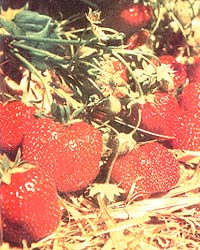 STRAWBERRIES, GUARDIAN |
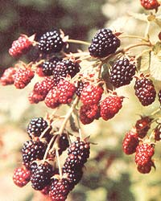 BLACKBERRIES |
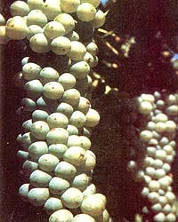 GRAPES, CAYUGA |
|
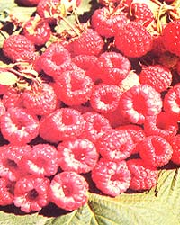 RASPBERRIES, HERITAGE |
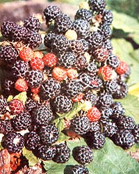 BLACK RASPBERRIES |
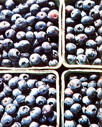 BLUEBERRIES, EARLBLUE |
|
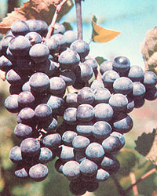 GRAPES, CONCORD |
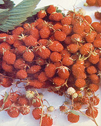 ALPINE STRAWBERRIES |
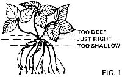 |
|
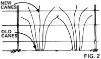 |
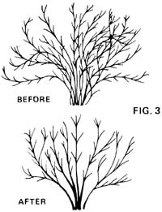 |
|